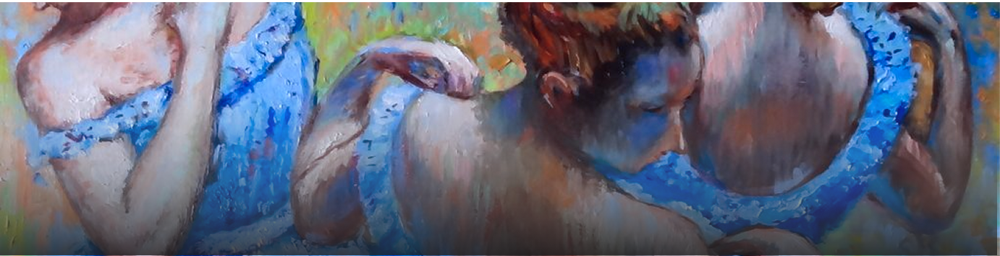
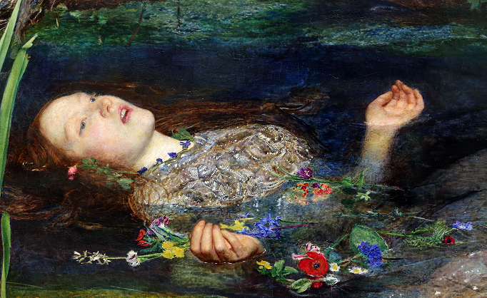
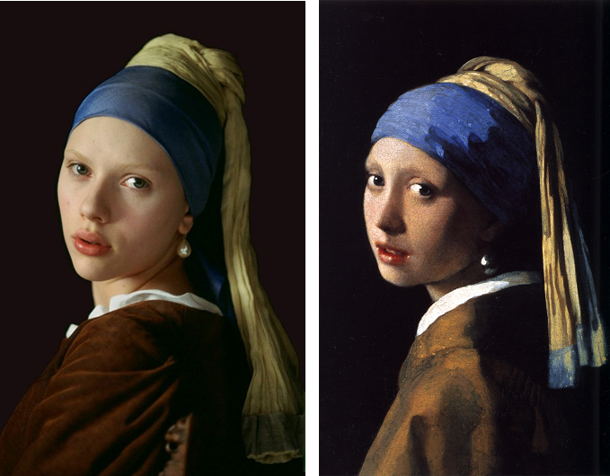
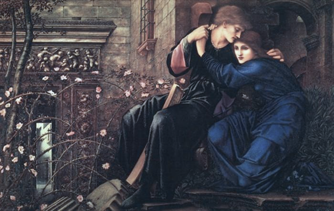

Как авторы современного искусства черпают
вдохновение у своих коллег по цеху

ОТСЫЛКИ ИЗ ПРОШЛОГО
Отсылки к произведениям прошлого — важная часть истории искусства. Художники разных эпох часто обращаются к известным образам, переосмысляют их и создают новые интерпретации. Благодаря этому произведения искусства продолжают «жить» в культуре, влияя на новые поколения художников и на развитие визуального языка.
Картина ”Офелия” художника Джона Милле является одним из самых известных произведений прерафаэлитского искусства. На ней изображена героиня трагедии Уильяма Шекспира, которая плывёт по воде среди цветов в момент своей гибели. Художник уделил большое внимание деталям природы и символике растений, благодаря чему картина выглядит одновременно красивой и трагичной, передавая атмосферу печали и романтической поэтики.


Другим узнаваемым образом в истории мирового искусства считается картина не столь известного художника “малого голландца” Яна Вермеера “Девушка с жемчужной сережкой”.
На ней изображена девушка, повернувшаяся к зрителю через плечо, с большой жемчужной серёжкой в ухе и мягким светом, падающим на её лицо. Картина привлекает внимание своей простотой, загадочным выражением лица героини и тонкой работой со светом и цветом, благодаря чему она стала настоящим символом голландского искусства и вдохновением для многих художников и фотографов.
Этот образ девушки стал символом загадочности и утончённой красоты. Картина оказала огромное влияние на современную культуру: её образ часто используется в моде, фотографии и дизайне.
Произведения художников прошлого продолжают влиять на развитие культуры. Их образы, идеи и художественные приёмы вдохновляют новых авторов и получают современные интерпретации. Благодаря этому классические картины остаются актуальными и продолжают жить в современном визуальном пространстве, оказывая влияние в том числе и на развитие декоративного искусства и стиля модерн.
